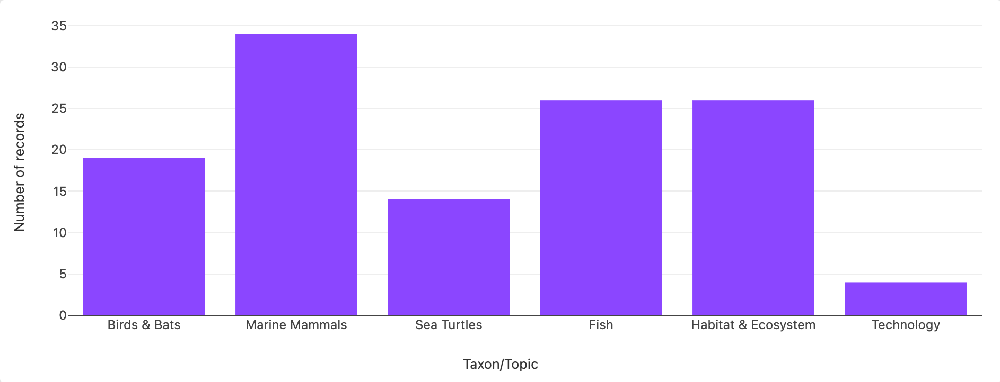

1 Introduction and Reader’s Guide
For more background and context, read the extended Introduction in the Appendix.
To develop the Science Plan, the RWSC Steering Committee convened six expert Subcommittees—Marine Mammal, Bird & Bat, Sea Turtle, Habitat & Ecosystem, Protected Fish Species, and Technology1. Contributors spanned U.S. federal agencies, states, offshore wind companies, environmental nonprofits, academic and research institutions, and other private entities. RWSC received comments and input from these groups and the public that greatly improved this Plan (see Science Plan Review & Revision Process).
How to Use This Plan
The Executive Summary recommends actions that anyone, including state and federal agencies, offshore wind companies, environmental nonprofits, and researchers, can take to implement the Science Plan.
Although government agencies participated in the development of the Science Plan, the document itself is not presently included in government regulations. Neither the RWSC nor any of its Subcommittees were established or are utilized by a federal agency for the purpose of obtaining advice or recommendations on issues or policies for any agency.
The U.S. Bureau of Ocean Energy Management (BOEM), which is the lead permitting agency for offshore wind, has required2 that offshore wind projects follow the Data Management & Storage Best Practices for Long-term and Archival Passive Acoustic Monitoring (PAM) Data developed by the RWSC Marine Mammal Subcommittee. These best practices were developed during the Science Plan development.
Several states currently require offshore wind companies to fund regional research that is consistent with the Science Plan as part of their power purchase agreements. RWSC has set up an Offshore Wind & Wildlife Research Fund to pool together resources to help facilitate regional research that’s consistent with the Science Plan.
RWSC will convene annual meetings to help states, industry, and other stakeholders to coordinate together around how they are and how they plan to fund offshore wind research.
For funds provided to RWSC, funding decisions will be advised by the expert Subcommittees and academics and ultimately reside with the Steering Committee, which is made up of representatives from government, industry, and non-governmental organizations.
Citations to Existing Work
Readers will find parenthetical citations to reports and scientific literature throughout the Science Plan. A complete bibliography is provided in Appendix L.
RWSC also has a public Science Plan Zotero library for all of the references in the Science Plan.
Species Focus
The Science Plan is separated into chapters that align with the Subcommittees’ expertise on species and habitat groups:
Marine Mammals
Birds
Bats
Sea Turtles
Protected Fish Species
Habitat & Ecosystem – Oceanography
Habitat & Ecosystem - Seafloor
Two additional chapters—Data Governance & Data Management and Technology—discuss issues that are pertinent to all species/habitat research and data collection activities.
Study Area and Subregions
The RWSC study area is defined as U.S. Atlantic waters where offshore wind is being developed, planned, and proposed.
The RWSC recognizes that species and ecosystems are not limited by political boundaries. To accommodate this fact, the ecological focus of the Science Plan includes all habitats occupied by the species under study. This could require collaboration with entities outside of the U.S. at times.
The RWSC study area is divided into smaller subregions to facilitate coordination and planning. The subregions are not necessarily ecologically or politically relevant and should not be used to bound or limit data collection and research activities. The subregions align and are named to correspond with the Bureau of Ocean Energy Management’s (BOEM’s) offshore wind planning areas:

Gulf of Maine: This subregion’s boundaries follow the offshore EEZ from downeast Maine to a line extending southeast from Hyannis, MA. The subregion includes the Gulf of Maine and Great South Channel.
Southern New England: This subregion extends from the southern border of the Gulf of Maine subregion to a line extending directly south from the Connecticut/Rhode Island state border, running roughly through the eastern border of Montauk, New York.
New York/New Jersey Bight: This subregion extends south from the southern border of the Southern New England subregion to a line running roughly east-southeast from Cape May, New Jersey. The subregion includes Long Island Sound and the Hudson Canyon.
U.S. Central Atlantic: This subregion is commonly referred to as the Mid-Atlantic Bight. It extends south from the southern border of the New York/New Jersey Bight subregion to a line running east from Cape Hatteras, North Carolina.
U.S. Southeast Atlantic: This subregion extends south from the southern border of the U.S. Central Atlantic subregion up to and including the Florida Keys.
Developing Recommendations
Each Subcommittee referenced and leveraged existing efforts to identify regional research needs related to offshore wind and wildlife. RWSC developed the Offshore Wind & Wildlife Research Database to hold this and other information about ongoing and planned research and data collection efforts in U.S. Atlantic waters that are being funded by federal agencies, states, offshore wind companies, and other entities. The Database displays information about each project’s overall goal(s), geographic area of focus, methods used, principal investigators, and other details. This information is being shared to encourage collaboration and reduce the likelihood of duplication. The intent of the Subcommittees and Steering Committee is to consider these ongoing and planning projects—including any relevant results—prior to planning new offshore wind and wildlife research. The Subcommittees continue to update the Database as projects are completed and new projects commence.
The Database currently captures information on over 70 ongoing projects funded and implemented specifically to study offshore wind and wildlife/environment interactions. The number of active projects differs among RWSC subregions and taxa/topics:


There are another >140 Database entries that capture pre-existing or long-term monitoring programs that are relevant to the study of offshore wind and wildlife but were not designed specifically to address the assessment of potential impacts.
The Subcommittee developed recommendations that consider past, current, and planned science activities relevant to offshore wind development and wildlife as catalogued in the Offshore Wind & Wildlife Research Database, and informed by existing publications, reports, presentations, and environmental monitoring conducted at offshore wind energy projects around the world.
The scope of the RWSC Science Plan does not include fisheries or commercially managed fish species. For research needs and considerations on those topics, visit the Responsible Offshore Science Alliance (ROSA; https://www.rosascience.org).↩︎
See South Fork Wind Conditions of COP Approval, Ocean Wind 1 Conditions of COP Approval, Revolution Wind Conditions of COP Approval, Coastal Virginia Offshore Wind Commercial Record of Decision, and Empire Wind Record of Decision.↩︎